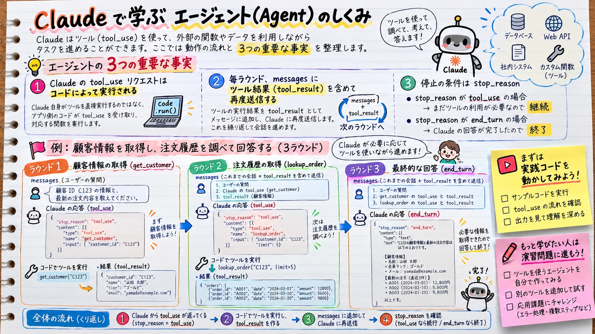
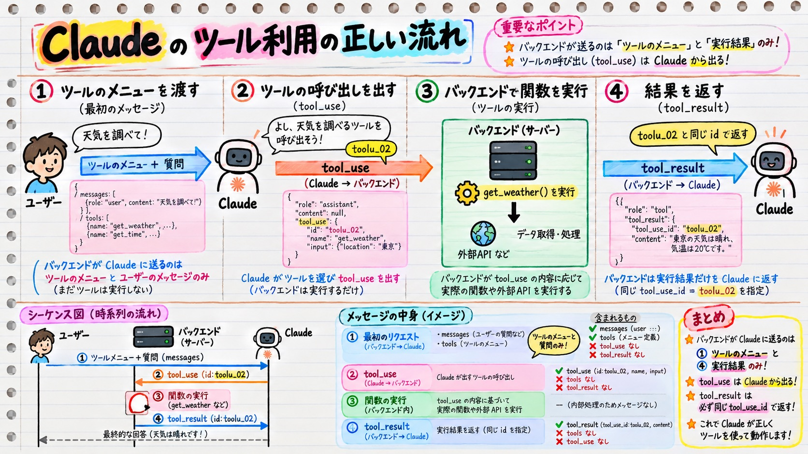
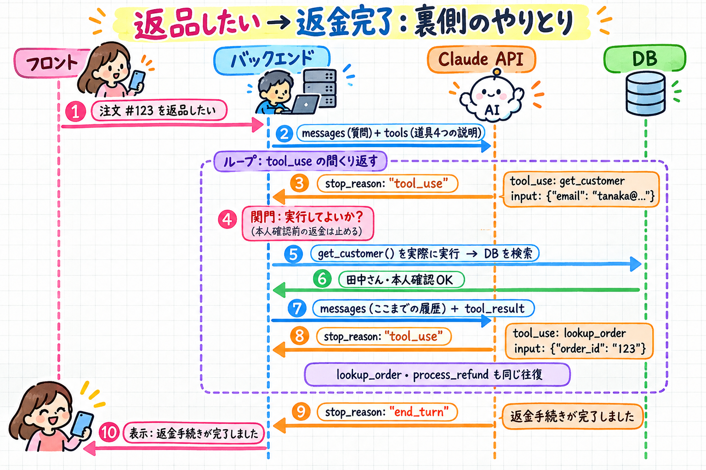
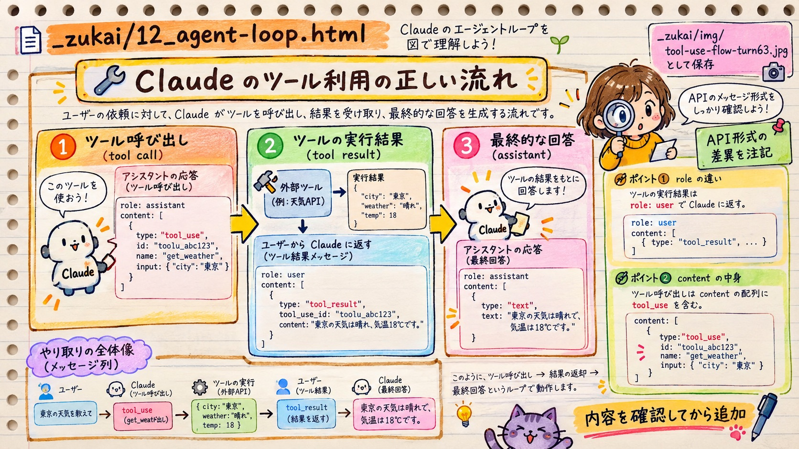

シナリオ1 ・ カスタマーサポートのエージェント
お客さんの1回の問い合わせの裏で、フロント・あなたのバックエンド・Claude API・DB の4者が何をやりとりしているか。stop_reason でループを続けるか終えるかを決める問題（エージェントの中心ループの問題）の図解です。

turn-review の1枚絵（「エージェント学習」）。①実行するのはコード ②届く道は messages だけ（毎回 tool_result を足して送り直す） ③続けるか終わるかは stop_reason。下段の3ラウンドの例も、JSON の形・向きともに正確です。

turn-review が作った1枚絵（「tool_use の矢印修正」）。①〜④の流れ・向き・担当者は正確です。細部の注意：④の JSON の "role": "tool" は Anthropic の API では "role": "user"（その中に {"type": "tool_result", …} のブロックを入れる）。②の "content": null も実際には content のリストの中に tool_use ブロックが入る形です（下の 4 番の実データを参照）。
1回の往復は、左から右へ 4ステップ。各カードの上の段で「どっちからどっちへ」、色の札で「誰が書いたか」が分かります。
tools: [get_customer,
lookup_order, …]
messages: [
{role: "user",
content: "返品したい"}]「使える道具の一覧」と質問を渡すだけ。まだ何も実行しない
stop_reason: "tool_use"
content: [
{type: "tool_use",
id: "toolu_02",
name: "lookup_order",
input: {order_id: "123"}}]Claude が一覧から選んで「これを、この引数で使って」と頼む
lookup_order("123")
→ DB を検索
→ "配達済み・
返品期限内"実行できるのはバックエンドだけ。Claude は DB に触れない
messages に足す：
{role: "user",
content: [
{type: "tool_result",
tool_use_id: "toolu_02",
content: "配達済み…"}]}②と同じ番号 toolu_02 を付けて、履歴ごと全部送り直す

↑ 時系列で並べたグラレコ版（矢印の向きはこの図が正確）。③ stop_reason: tool_use とその横の「tool_use: get_customer」は Claude から返ってくるもの。
上から下へ時間が進みます。縦の点線が4者。③〜⑦の往復が「ループ」で、stop_reason が tool_use の間くり返します。
Claude API は、前回の呼び出しを覚えていません。だからバックエンドは、毎周 messages に履歴を積み足して、最初から全部送り直します。紫の枠が、その周で新しく足されたものです。
{"order_id": "123"}）のこと。履歴を足していくのは、いちばん外側の messages のリストです。messages ← 履歴はここ。毎周、末尾に足して、全部まとめて送る
├ {role: "user", content: "注文#123を返品したい"} お客さんの質問
├ {role: "assistant", content: [ Claude の返事（1周目）
│ {type: "text", text: "お調べします"},
│ {type: "tool_use", id: "toolu_01", name: "get_customer",
│ input: {"email": "tanaka@…"}} ]} ← input はこの中の「引数」だけ
├ {role: "user", content: [ バックエンドが足す（1周目の結果）
│ {type: "tool_result", tool_use_id: "toolu_01", content: "田中さん・確認OK"} ]}
├ {role: "assistant", content: [ {type: "tool_use", id: "toolu_02",
│ name: "lookup_order", input: {"order_id": "123"}} ]}
└ {role: "user", content: [ {type: "tool_result", tool_use_id: "toolu_02",
content: "配達済み・返品期限内"} ]} ← 今回足した分ピンク＝お客さんの発言、オレンジ＝Claude の返事（お願い）、緑＝ツールの実行結果（tool_result。API の決まりで role は "user" として送る）

turn-review の1枚絵（「API のメッセージ形式」）。0 番の絵の ②注文票・④料理、そしてループの最後の最終回答を、API に実際に載る JSON の形で描いたもの。形は正確です（tool_result は role: user の中に入れる／tool_use は content の配列の中に入る）。
messages = [
{"role": "user",
"content": "注文#123を返品したい"}
]
tools = [get_customer, lookup_order,
process_refund, escalate_to_human]stop_reason: "tool_use"
content: [
{"type": "text", "text": "お調べします"},
{"type": "tool_use", "id": "t1",
"name": "get_customer",
"input": {"email": "tanaka@…"}}
]messages = [
{"role": "user", "content": "注文#123を返品したい"},
{"role": "assistant", "content": [↑1周目の返事そのまま]},
{"role": "user", "content": [
{"type": "tool_result", "tool_use_id": "t1",
"content": "田中さん・本人確認OK"}]}
]stop_reason: "tool_use"
content: [
{"type": "tool_use", "id": "t2",
"name": "lookup_order",
"input": {"order_id": "123"}}
]for turn in range(MAX_TURNS): # 暴走防止の上限（終わりの判断ではない）
res = client.messages.create(…, tools=…, messages=messages)
messages.append({"role": "assistant", "content": res.content})
if res.stop_reason != "tool_use": # ← ここが判断。end_turn なら
break # ループを抜けて最終回答を表示
for b in res.content: # tool_use ブロックだけ拾って
if b.type == "tool_use":
result = IMPL[b.name](**b.input) # 実際に関数を実行（DB にアクセス）
… tool_result を messages に足す # 次の周で Claude に送る練習用コード labs/scenario1-no-mcp/agent.py の「50行のループ」と同じ形です。
labs/scenario1-no-mcp/replay/live.py --auto-reply で実際に1件流した結果です。1ステップずつの再生は 13_live-run-replay.html。
| 周 | ① 送った messages | ② 返ってきたもの | ③ バックエンドが実行 |
|---|---|---|---|
| 1 | 1件（お客さん「田中です。スニーカーを返品・返金して」） | end_turn：「メールアドレスとフルネームを教えてください」 | なし（聞き返して Claude の番が終わった） |
| 👤 お客さん役：「hanako.tanaka@example.com です」→ user として messages に足して続ける | |||
| 2 | 3件 | tool_use が 2つ同時：get_customer(email=hanako…)／lookup_order(customer_name="田中") | get_customer → 田中花子（C-2044）本人確認OK lookup_order → 名前だけで検索し、田中太郎（C-8831）の注文 O-42 を推測で拾う ⚠ |
| 3 | 5件（tool_result を2つ足した。tool_use_id でそれぞれ対応） | end_turn：「田中花子様、注文 O-42 ランニングシューズ ¥12,800 でよろしいですか？」 | なし。返金はまだ（お金は動かなかった） |
| この記録から分かること | 試験のどこにつながるか |
|---|---|
1つの返事に tool_use が複数入る → 結果は tool_use_id で対応づけて返す | ツールの結果を Claude にどう届けるかの問題（正解：ID 付きの tool_result を messages に足して送り直す） |
end_turn は「解決した」ではなく「Claude の番が終わった」。聞き返しでも end_turn | ループの止め方の問題（「解決しました」という言葉を探す選択肢が✗の理由） |
| 「本人確認してから注文検索」の順番を Claude は守らないことがある | 返金の上限・順番をフック（コード）で強制する問題。お願い（プロンプト）では確実にならない |
| 用語 | 意味 | 図のどこ |
|---|---|---|
tools | 使える道具の説明の一覧（白紙の記入用紙の束） | ②で送る |
tool_use | Claude の「この道具をこの引数で使って」というお願い | ③⑦の紫の箱 |
tool_result | バックエンドが実行した結果。次の周で Claude に送る | ⑥ |
stop_reason: "tool_use" | 「道具を使ってほしいので止まりました」→ ループを続ける | ③⑦ |
stop_reason: "end_turn" | 「答え終わりました」→ ループを抜けて表示 | ⑧ |
messages | 会話の履歴。毎周、全部送り直す | 3 の図 |
| 関門（フック・ガード） | 実行する前にバックエンドが止められる場所 | ③と④の間の赤枠 |